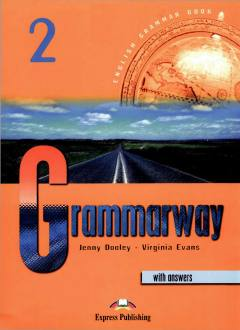

G2Ingliz tili grammatikasini o'rganish uchun mo'ljallangan rang-barang amaliy qo'llanma.
Grammarway 2 - ingliz tilini boshlang'ichdan keyingi bosqichda o'rganuvchilar uchun mo'ljallangan to'rt qismli grammatika qo'llanmasining ikkinchi kitobidir. Kitob qiziqarli rasmlar va jadvallar yordamida ingliz tili grammatik tuzilmalarini tushuntiradi hamda turli mashqlar orqali mustahkamlash imkonini beradi. Har bir bo'limda qoidalar qisqacha tushuntirilib, kundalik hayotda qo'llaniladigan misollar bilan boyitilgan.